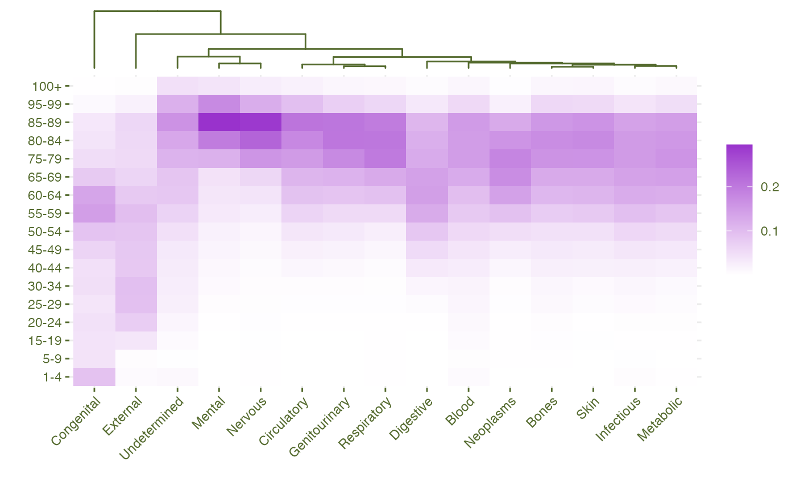
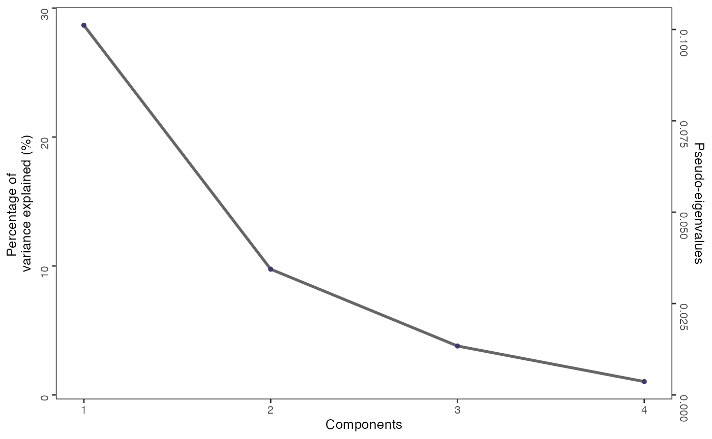

Example 1: Sparse Correspondence Analysis of the Causes of Death in the US in 2019
example1_sCA.RmdSetup
We begin by loading the SPAFAC package and the data.
library(SPAFAC)
#>
#> Attaching package: 'SPAFAC'
#> The following objects are masked from 'package:sGSVD':
#>
#> is_GSVD, is_sGSVD, is_sPLS, is_sSVD
data("example1_sCA")
example1_sCA
#> 1-4 5-9 15-19 20-24 25-29 30-34 40-44 45-49 50-54 55-59 60-64
#> Blood 65 31 61 82 123 148 229 320 462 664 804
#> Bones 5 11 32 58 109 146 259 366 501 845 1198
#> Circulatory 192 130 380 770 1599 2971 8552 14771 24780 41853 59820
#> Congenital 416 192 188 202 177 219 208 295 412 666 616
#> Digestive 45 45 70 162 526 1334 2938 4775 7475 11385 12976
#> External 1520 930 7827 15271 19413 19887 16860 16993 18017 20000 16737
#> Genitourinary 13 10 29 63 134 260 596 1085 1820 3016 4773
#> Infectious 214 98 79 184 435 702 1197 1909 2980 4872 6313
#> Mental 8 6 29 148 422 802 1159 1526 2051 3095 3540
#> Metabolic 100 74 187 401 672 1032 2261 3654 5877 9415 13127
#> Neoplasms 334 402 617 837 1403 2286 6709 12760 23360 44948 68292
#> Nervous 203 178 368 506 642 762 1112 1745 2576 4485 6896
#> Respiratory 269 168 194 333 511 710 1360 2644 5117 11371 19034
#> Skin 1 1 9 6 22 35 92 121 177 322 444
#> Undetermined 229 43 154 348 543 611 683 759 1036 1503 1893
#> 65-69 75-79 80-84 85-89 95-99 100+
#> Blood 1035 1216 1211 1233 462 116
#> Bones 1407 1801 1892 1724 643 142
#> Circulatory 72018 98505 116178 136117 62888 13628
#> Congenital 364 234 183 161 43 7
#> Digestive 12740 11347 10832 9891 3118 512
#> External 13036 11483 11639 12354 4211 769
#> Genitourinary 6247 9586 11149 11221 3898 731
#> Infectious 7074 7615 7590 7087 1999 334
#> Mental 4105 11214 18802 28346 16885 3918
#> Metabolic 15512 17371 16801 15841 5382 1084
#> Neoplasms 82182 88073 77359 61320 10863 1434
#> Nervous 10310 27193 39596 49140 21065 4536
#> Respiratory 25896 40608 41591 40110 12222 2409
#> Skin 511 648 707 648 222 62
#> Undetermined 1954 2593 2983 3708 2704 1046
I <- nrow(example1_sCA)
J <- ncol(example1_sCA)The following heatmap depicts the column profiles of the data matrix, with the columns ordered based on a hierarchical clustering based on \(\chi^2\)-distance coupled with Ward’s agglomeration method.
colprofiles <- prop.table(example1_sCA, margin = 2)
d.m <- as_tibble(
colprofiles,
rownames = "row") %>%
pivot_longer(
-1,
names_to = "col") %>%
mutate(row = factor(
row,
levels = c("1-4", "5-9", "10-14", "15-19", "20-24", "25-29", "30-34",
"35-39", "40-44", "45-49", "50-54", "55-59", "60-64", "65-69",
"70-74", "75-79", "80-84", "85-89", "90-94", "95-99", "100+")))
chi2_distmat <- as.dist(sqrt(DistatisR::Chi2Dist(t(example1_sCA))$Distance))
dend.death <- hclust(
chi2_distmat,
method = "ward.D2")
gtree <- ggtree(
dend.death,
color = "darkolivegreen",
hang = 0) +
layout_dendrogram()
hm <- d.m %>%
ggplot(aes(col, row, fill = value)) +
geom_tile() +
scale_fill_gradient(
# transform = "log10",
low = "white", high = "darkorchid") +
theme_minimal() +
theme(
text = element_text(color = "darkolivegreen"),
axis.text.x = element_text(angle = 45, hjust = 1, color = "darkolivegreen"),
axis.text.y = element_text(color = "darkolivegreen"),
axis.ticks = element_line(color = "darkolivegreen")) +
labs(x = "", y = "", fill = "")
(hm %>% insert_top(gtree, height = 0.2)) 
sparse CA
Fixed sparse parameters
text_size <- 8
dim2get <- 4L
rdsleft <- rep(2.319896, dim2get)
rdsright <- rep(1.353568, dim2get) #0.5994068
ca.res <- ExPosition::epCA(example1_sCA, k = 19, graphs = FALSE)
sca.res <- sparseCA(
example1_sCA,
components = dim2get,
rdsLeft = rdsleft,
rdsRight = rdsright
)
#> [1] 0.31805697 0.18549833 0.11569657 0.06044603
sca.eig <- data.frame(
eig = sca.res$eig,
tau = 100 * sca.res$eig / sum(ca.res$ExPosition.Data$eigs))
color.sig = "#42376B" ;color.ns = "grey60"; cex = 1.1; text.cex = 10; lwd = 1
scree.plot <- sca.eig |>
ggplot(aes(x = 1:length(eig), y = tau)) +
geom_line(color = "grey40", size = lwd) +
geom_point(color = color.sig, size = cex) +
# geom_hline(yintercept = 1, linetype = "dashed", color = "darkgreen", size = lwd) +
scale_y_continuous(name = bquote(atop(bold(.(title)),paste('\n\n Percentage of \nvariance explained (%)'))),
sec.axis = sec_axis(~.*(sca.eig$eig[1]/sca.eig$tau[1]), name = "Pseudo-eigenvalues")) +
xlab("Components") +
scale_x_continuous(breaks=c(1:9)) +
theme(text = element_text(size = text.cex),
legend.position = "none",
axis.text.y.left = element_text(angle = 90),
axis.text.y.right = element_text(angle = 270),
panel.background = element_rect(fill = "transparent"),
panel.border = element_rect(color = "black", fill = "transparent"))
#> Warning: Using `size` aesthetic for lines was deprecated in ggplot2 3.4.0.
#> ℹ Please use `linewidth` instead.
#> This warning is displayed once every 8 hours.
#> Call `lifecycle::last_lifecycle_warnings()` to see where this warning was
#> generated.
scree.plot
Age categories
sca.fi.map.12 <- createFactorMap(X = sca.res$fi,
col.points = "#E08214",
col.labels = "#E08214",
col.background = NULL,
col.axes = "#42376B", width.axes = 0.5,
title = "sCA: row factor scores",
alpha.axes = 0.5,
alpha.points = 0.5,
pch = 16,
axis1 = 1,
axis2 = 2,
constraints = NULL,
text.cex = 2)
sca.fi.plot.12 <- sca.fi.map.12$zeMap_background + sca.fi.map.12$zeMap_dots + sca.fi.map.12$zeMap_text + sca.fi.map.12$label + geom_path(color = "#E08214") + theme(axis.title = element_text(size = text_size, color = "#42376B"), axis.text = element_text(size = text_size, color = "#42376B"), title = element_text(size = text_size, color = "#42376B"), panel.border = element_rect(size = 1.5, color = "#42376B", fill = NA))
#> Warning: The `size` argument of `element_rect()` is deprecated as of ggplot2 3.4.0.
#> ℹ Please use the `linewidth` argument instead.
#> This warning is displayed once every 8 hours.
#> Call `lifecycle::last_lifecycle_warnings()` to see where this warning was
#> generated.
sca.fi.plot.12
#> Warning: ggrepel: 3 unlabeled data points (too many overlaps). Consider
#> increasing max.overlaps
# cp 3 & 4
sca.fi.map.34 <- createFactorMap(X = sca.res$fi,
col.points = "#E08214",
col.labels = "#E08214",
col.background = NULL,
col.axes = "#42376B", width.axes = 0.5,
title = "sCA: row factor scores",
alpha.axes = 0.5,
alpha.points = 0.5,
pch = 16,
axis1 = 3,
axis2 = 4,
constraints = NULL,
text.cex = 2)
sca.fi.plot.34 <- sca.fi.map.34$zeMap_background + sca.fi.map.34$zeMap_dots + sca.fi.map.34$zeMap_text + sca.fi.map.34$label + geom_path(color = "#E08214") + theme(axis.title = element_text(size = text_size, color = "#42376B"), axis.text = element_text(size = text_size, color = "#42376B"), title = element_text(size = text_size, color = "#42376B"), panel.border = element_rect(size = 1.5, color = "#42376B", fill = NA))
sca.fi.plot.34
#> Warning: ggrepel: 10 unlabeled data points (too many overlaps). Consider
#> increasing max.overlaps
Causes of death
sca.fj.map.12 <- createFactorMap(X = sca.res$fj,
col.points = "#2166AC",
col.labels = "#2166AC",
col.background = NULL,
col.axes = "#42376B", width.axes = 0.5,
title = "sCA: column factor scores",
alpha.axes = 0.5,
alpha.points = 0.5,
pch = 16,
axis1 = 1,
axis2 = 2,
constraints = NULL,
text.cex = 2)
sca.fj.plot.12 <- sca.fj.map.12$zeMap_background + sca.fj.map.12$zeMap_dots + sca.fj.map.12$zeMap_text + sca.fj.map.12$label + theme(axis.title = element_text(size = text_size, color = "#42376B"), axis.text = element_text(size = text_size, color = "#42376B"), title = element_text(size = text_size, color = "#42376B"), panel.border = element_rect(size = 1.5, color = "#42376B", fill = NA))
#> Warning: The `size` argument of `element_rect()` is deprecated as of ggplot2 3.4.0.
#> ℹ Please use the `linewidth` argument instead.
#> This warning is displayed once every 8 hours.
#> Call `lifecycle::last_lifecycle_warnings()` to see where this warning was
#> generated.
sca.fj.plot.12
#> Warning: ggrepel: 12 unlabeled data points (too many overlaps). Consider
#> increasing max.overlaps
# cp 3 & 4
sca.fj.map.34 <- createFactorMap(X = sca.res$fj,
col.points = "#2166AC",
col.labels = "#2166AC",
col.background = NULL,
col.axes = "#42376B", width.axes = 0.5,
title = "sCA: column factor scores",
alpha.axes = 0.5,
alpha.points = 0.5,
pch = 16,
axis1 = 3,
axis2 = 4,
constraints = NULL,
text.cex = 2)
sca.fj.plot.34 <- sca.fj.map.34$zeMap_background + sca.fj.map.34$zeMap_dots + sca.fj.map.34$zeMap_text + sca.fj.map.34$label + theme(axis.title = element_text(size = text_size, color = "#42376B"), axis.text = element_text(size = text_size, color = "#42376B"), title = element_text(size = text_size, color = "#42376B"), panel.border = element_rect(size = 1.5, color = "#42376B", fill = NA))
sca.fj.plot.34
#> Warning: ggrepel: 13 unlabeled data points (too many overlaps). Consider
#> increasing max.overlaps